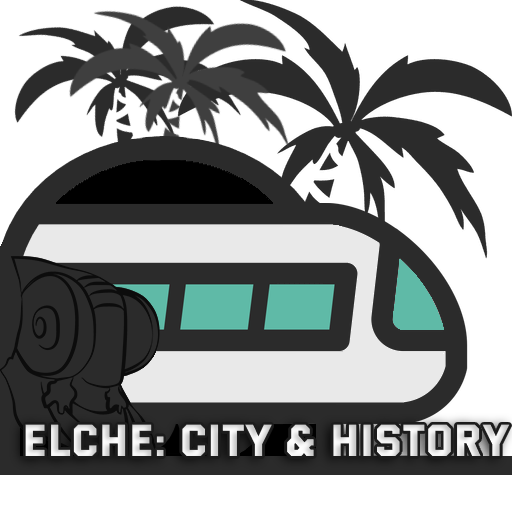

The city is known for the Palmeral de Elche, that is an UNESCO World Heritage Site and is the only palm grove in Europe with North African origins and the largest on the continent. The Palm Grove also constitutes the northernmost and one of the largest palm groves in the world.
In 2016, the municipality of Elche had 227,659 inhabitants, according to official INE figures. Of these, 187,195 inhabitants, 82.23% of the population, lived in the urban area of Elche and the rest in the numerous rural areas and districts of the city.
The rural areas in Elche, due to the climate and the beaches nearby, receive many tourists especially in summer. Not olny Spanish tourists that live far from the coast, but also many tourists from other countries.
Nowadays, the economy of Elche is still based, in large part, on the footwear industry, with over 1,000 shoe factories, being one of the most important footwear centres in Spain and the rest of Europe with brands like Pura Lopez, Kelme or Panama Jack.